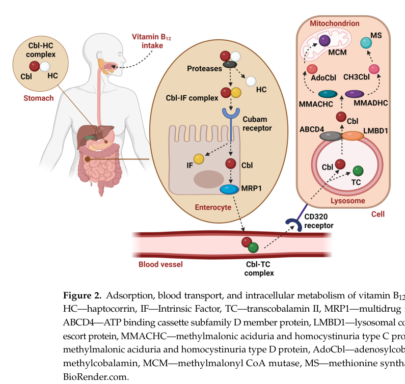

Hereditary intrinsic factor deficiency is a rare autosomal recessive disorder of selective cobalamin absorption caused by pathogenic variants in CBLIF (historically GIF), the gastric intrinsic factor gene. Deficient intrinsic factor prevents normal vitamin B12 uptake, leading to low cobalamin, methylmalonic aciduria and hyperhomocysteinemia, megaloblastic anemia, and risk of neurologic injury if treatment is delayed. Lifelong vitamin B12 replacement is disease modifying and can normalize clinical, hematologic, and biochemical parameters.
Ask a research question about Hereditary intrinsic factor deficiency. OpenScientist will conduct autonomous deep research using the Disorder Mechanisms Knowledge Base and PubMed literature (typically 10-30 minutes).
Do not include personal health information in your question. Questions and results are cached in your browser's local storage.

Conditions with similar clinical presentations that must be differentiated from Hereditary intrinsic factor deficiency:
name: Hereditary intrinsic factor deficiency
creation_date: "2026-05-14T18:22:33Z"
updated_date: "2026-05-19T06:28:48Z"
synonyms:
- congenital intrinsic factor deficiency
- inherited intrinsic factor deficiency
- congenital pernicious anemia
- gastric intrinsic factor deficiency
- hereditary juvenile megaloblastic anemia due to intrinsic factor deficiency
description: >-
Hereditary intrinsic factor deficiency is a rare autosomal recessive disorder
of selective cobalamin absorption caused by pathogenic variants in CBLIF
(historically GIF), the gastric intrinsic factor gene. Deficient intrinsic
factor prevents normal vitamin B12 uptake, leading to low cobalamin,
methylmalonic aciduria and hyperhomocysteinemia, megaloblastic anemia, and
risk of neurologic injury if treatment is delayed. Lifelong vitamin B12
replacement is disease modifying and can normalize clinical, hematologic, and
biochemical parameters.
category: Mendelian
parents:
- hereditary anemia
- inborn disorder of cobalamin metabolism and transport
disease_term:
preferred_term: hereditary intrinsic factor deficiency
term:
id: MONDO:0009852
label: hereditary intrinsic factor deficiency
inheritance:
- name: Autosomal recessive inheritance
description: >-
Hereditary intrinsic factor deficiency is caused by recessive CBLIF/GIF
variants, with affected individuals carrying biallelic pathogenic alleles.
inheritance_term:
preferred_term: Autosomal recessive inheritance
term:
id: HP:0000007
label: Autosomal recessive inheritance
evidence:
- reference: DOI:10.1073/pnas.0500517102
reference_title: "Hereditary juvenile cobalamin deficiency caused by mutations in the intrinsic factor gene"
supports: SUPPORT
evidence_source: HUMAN_CLINICAL
snippet: >-
The gastric IF (
GIF
) gene located in this region harbored homozygous nonsense and missense mutations in these four families and in three additional families.
explanation: >-
The family series identified homozygous GIF variants in multiple affected
kindreds, supporting recessive inheritance of intrinsic factor deficiency.
pathophysiology:
- name: CBLIF-related intrinsic factor loss
description: >-
Pathogenic CBLIF/GIF variation reduces or abolishes functional gastric
intrinsic factor, preventing normal binding and intestinal uptake of dietary
cobalamin.
genes:
- preferred_term: CBLIF
term:
id: hgnc:4268
label: CBLIF
cell_types:
- preferred_term: gastric parietal cell
term:
id: CL:0000162
label: parietal cell
biological_processes:
- preferred_term: cobalamin transport
modifier: DECREASED
term:
id: GO:0015889
label: cobalamin transport
evidence:
- reference: DOI:10.1182/blood-2003-07-2239
reference_title: "Identification of a 4-base deletion in the gene in inherited intrinsic factor deficiency"
supports: SUPPORT
evidence_source: HUMAN_CLINICAL
snippet: >-
A 4-base deletion has been identified in the coding region of the gene for gastric intrinsic factor (IF) in an 11-year-old girl with severe anemia and cobalamin (Cbl) deficiency.
explanation: >-
This case report directly links an intrinsic factor gene deletion to
severe anemia and cobalamin deficiency.
- reference: PMID:25308559
reference_title: "Biochemical and Hematologic Manifestations of Gastric Intrinsic Factor (GIF) Deficiency: A Treatable Cause of B12 Deficiency in the Old Order Mennonite Population of Southwestern Ontario."
supports: SUPPORT
evidence_source: HUMAN_CLINICAL
snippet: "Intrinsic factor deficiency (OMIM #261000, IFD) is a rare inherited disorder of vitamin B12 metabolism due to mutations in the gastric intrinsic factor (GIF) gene."
explanation: >-
The Old Order Mennonite case series supports GIF mutation as the upstream
cause of inherited intrinsic factor deficiency.
downstream:
- target: Impaired intrinsic factor-dependent cobalamin absorption
description: >-
Loss of functional intrinsic factor prevents effective absorption of
dietary cobalamin.
causal_link_type: DIRECT
evidence:
- reference: DOI:10.1182/blood-2003-07-2239
reference_title: "Identification of a 4-base deletion in the gene in inherited intrinsic factor deficiency"
supports: SUPPORT
evidence_source: HUMAN_CLINICAL
snippet: >-
The bone marrow showed frank megaloblastic morphology, and the Schilling test indicated a failure to absorb Cbl that was corrected by coadministration of IF.
explanation: >-
Correction of cobalamin absorption by intrinsic factor supports the
direct causal link from IF loss to impaired absorption.
- name: Impaired intrinsic factor-dependent cobalamin absorption
description: >-
Intrinsic-factor-dependent cobalamin transport failure depletes systemic
vitamin B12 and disrupts downstream one-carbon and methylmalonic acid
metabolism.
cell_types:
- preferred_term: ileal enterocyte
term:
id: CL:0000584
label: enterocyte
biological_processes:
- preferred_term: cobalamin transport
modifier: DECREASED
term:
id: GO:0015889
label: cobalamin transport
- preferred_term: one-carbon metabolic process
modifier: ABNORMAL
term:
id: GO:0006730
label: one-carbon metabolic process
evidence:
- reference: PMID:22929189
reference_title: "Inherited cobalamin malabsorption. Mutations in three genes reveal functional and ethnic patterns."
supports: SUPPORT
evidence_source: HUMAN_CLINICAL
snippet: >-
Recessive mutations in CUBN or AMN cause Imerslund-Gräsbeck Syndrome (IGS), while recessive mutations in GIF cause Intrinsic Factor Deficiency (IFD).
explanation: >-
The large hereditary cobalamin malabsorption cohort separates GIF-caused
intrinsic factor deficiency from receptor-mediated IGS.
- reference: DOI:10.3390/ijms25158021
reference_title: "Vitamin B12 Metabolism: A Network of Multi-Protein Mediated Processes"
supports: PARTIAL
evidence_source: OTHER
snippet: >-
Thus, this review aims to compile current knowledge about the crucial proteins necessary to efficiently accumulate and process vitamin B12 in humans, presenting these systems as a multi-protein network.
explanation: >-
The 2024 review provides a current pathway synthesis for vitamin B12
absorption and processing; the Falcon artifact image directly illustrates
the intrinsic-factor-dependent absorption pathway.
images:
- Hereditary_Intrinsic_Factor_Deficiency-deep-research-falcon_artifacts/image-1.png
downstream:
- target: Biochemical cobalamin deficiency pattern
description: >-
Defective cobalamin absorption lowers serum vitamin B12 and can increase
methylmalonic acid and homocysteine.
causal_link_type: DIRECT
evidence:
- reference: PMID:25308559
reference_title: "Biochemical and Hematologic Manifestations of Gastric Intrinsic Factor (GIF) Deficiency: A Treatable Cause of B12 Deficiency in the Old Order Mennonite Population of Southwestern Ontario."
supports: SUPPORT
evidence_source: HUMAN_CLINICAL
snippet: >-
Serum B12 was 61 (198-615 pmol/L). Methylmalonic aciduria was present. C3 was elevated on acylcarnitine profile. Homocysteine was high at 16.7 (5.0-12.0 umol/L).
explanation: >-
The GIF-deficiency case series documents the low serum B12,
methylmalonic aciduria, and hyperhomocysteinemia pattern downstream of
inherited intrinsic-factor-dependent absorption failure.
- target: Megaloblastic erythropoietic failure
description: >-
Cobalamin depletion impairs DNA synthesis during erythropoiesis, producing
megaloblastic anemia.
causal_link_type: DIRECT
evidence:
- reference: PMID:22854512
reference_title: "How can cobalamin injections be spaced in long-term therapy for inborn errors of vitamin B(12) absorption?"
supports: SUPPORT
evidence_source: HUMAN_CLINICAL
snippet: >-
These disorders lead to intracellular Cbl depletion which in turn causes megaloblastic bone marrow failure, accumulation of homocysteine and methylmalonic acid (MMA), and methionine depletion.
explanation: >-
The inherited cobalamin-absorption cohort directly links Cbl depletion
from absorption disorders to megaloblastic bone marrow failure.
- name: Biochemical cobalamin deficiency pattern
description: >-
Impaired intrinsic factor-dependent absorption lowers serum cobalamin and
produces the downstream biochemical pattern of methylmalonic acid and
homocysteine accumulation.
biological_processes:
- preferred_term: cobalamin metabolic process
modifier: ABNORMAL
term:
id: GO:0009235
label: cobalamin metabolic process
- preferred_term: one-carbon metabolic process
modifier: ABNORMAL
term:
id: GO:0006730
label: one-carbon metabolic process
evidence:
- reference: PMID:25308559
reference_title: "Biochemical and Hematologic Manifestations of Gastric Intrinsic Factor (GIF) Deficiency: A Treatable Cause of B12 Deficiency in the Old Order Mennonite Population of Southwestern Ontario."
supports: SUPPORT
evidence_source: HUMAN_CLINICAL
snippet: >-
Serum B12 was 61 (198-615
pmol/L).
explanation: >-
The low serum B12 measurement supports systemic cobalamin deficiency
downstream of intrinsic factor loss.
- reference: PMID:22854512
reference_title: "How can cobalamin injections be spaced in long-term therapy for inborn errors of vitamin B(12) absorption?"
supports: SUPPORT
evidence_source: HUMAN_CLINICAL
snippet: >-
These disorders lead to intracellular Cbl depletion which in
turn causes megaloblastic bone marrow failure, accumulation of homocysteine and
methylmalonic acid (MMA), and methionine depletion.
explanation: >-
The inherited B12 absorption-disorder cohort supports the biochemical
pattern linking cobalamin depletion to homocysteine and methylmalonic acid
accumulation.
downstream:
- target: Megaloblastic erythropoietic failure
description: >-
Cobalamin-dependent biochemical disruption impairs bone marrow
erythropoiesis.
causal_link_type: DIRECT
evidence:
- reference: PMID:22854512
reference_title: "How can cobalamin injections be spaced in long-term therapy for inborn errors of vitamin B(12) absorption?"
supports: SUPPORT
evidence_source: HUMAN_CLINICAL
snippet: >-
These disorders lead to intracellular Cbl depletion which in turn causes megaloblastic bone marrow failure, accumulation of homocysteine and methylmalonic acid (MMA), and methionine depletion.
explanation: >-
This supports megaloblastic marrow failure as a downstream consequence
of the intracellular cobalamin-depletion biochemical state.
- target: Gastrointestinal symptoms
description: >-
Systemic cobalamin deficiency from congenital absorption disorders can
manifest with gastrointestinal symptoms.
causal_link_type: INDIRECT_UNKNOWN_INTERMEDIATES
evidence:
- reference: PMID:22854512
reference_title: "How can cobalamin injections be spaced in long-term therapy for inborn errors of vitamin B(12) absorption?"
supports: SUPPORT
evidence_source: HUMAN_CLINICAL
snippet: >-
The clinical presentation reflects Cbl deficiency, with gastrointestinal symptoms, pancytopenia, and megaloblastic anemia.
explanation: >-
The cohort summary states that gastrointestinal symptoms reflect the
underlying cobalamin-deficiency state.
- target: Neurological abnormalities
description: >-
Inherited cobalamin malabsorption can produce neurologic manifestations
through downstream effects of cobalamin deficiency.
causal_link_type: INDIRECT_UNKNOWN_INTERMEDIATES
evidence:
- reference: PMID:22929189
reference_title: "Inherited cobalamin malabsorption. Mutations in three genes reveal functional and ethnic patterns."
supports: SUPPORT
evidence_source: HUMAN_CLINICAL
snippet: >-
Inherited malabsorption of cobalamin (Cbl) causes hematological and neurological abnormalities that can be fatal.
explanation: >-
The hereditary cobalamin-malabsorption cohort links the inherited
absorption defect to neurologic abnormalities.
- name: Megaloblastic erythropoietic failure
description: >-
Vitamin B12 depletion disrupts erythroblast maturation, causing macrocytic
or megaloblastic anemia and sometimes broader marrow failure.
cell_types:
- preferred_term: erythroblast
term:
id: CL:0000765
label: erythroblast
biological_processes:
- preferred_term: erythrocyte differentiation
modifier: ABNORMAL
term:
id: GO:0030218
label: erythrocyte differentiation
evidence:
- reference: PMID:25308559
reference_title: "Biochemical and Hematologic Manifestations of Gastric Intrinsic Factor (GIF) Deficiency: A Treatable Cause of B12 Deficiency in the Old Order Mennonite Population of Southwestern Ontario."
supports: SUPPORT
evidence_source: HUMAN_CLINICAL
snippet: >-
He had pancytopenia with megaloblastic anemia.
explanation: >-
This patient-level observation supports megaloblastic erythropoietic
failure as a downstream manifestation of intrinsic factor deficiency.
downstream:
- target: Megaloblastic anemia
description: >-
Megaloblastic erythropoietic failure produces the hallmark
megaloblastic anemia phenotype.
causal_link_type: DIRECT
evidence:
- reference: PMID:25308559
reference_title: "Biochemical and Hematologic Manifestations of Gastric Intrinsic Factor (GIF) Deficiency: A Treatable Cause of B12 Deficiency in the Old Order Mennonite Population of Southwestern Ontario."
supports: SUPPORT
evidence_source: HUMAN_CLINICAL
snippet: >-
He had pancytopenia with megaloblastic anemia.
explanation: >-
The patient-level observation directly supports megaloblastic anemia as
the clinical expression of the erythropoietic failure node.
- target: Macrocytic anemia
description: >-
Megaloblastic cobalamin-deficiency anemia falls within the
macrocytic-anemia spectrum.
causal_link_type: DIRECT
evidence:
- reference: DOI:10.1073/pnas.0500517102
reference_title: "Hereditary juvenile cobalamin deficiency caused by mutations in the intrinsic factor gene"
supports: SUPPORT
evidence_source: HUMAN_CLINICAL
snippet: >-
Hereditary juvenile megaloblastic anemia due to vitamin B 12 (cobalamin) deficiency is caused by intestinal malabsorption of cobalamin.
explanation: >-
The family study supports cobalamin-malabsorption megaloblastic anemia,
which is the macrocytic anemia pattern represented by this phenotype.
- target: Pancytopenia
description: >-
Severe cobalamin-related marrow failure can broaden beyond anemia to
pancytopenia.
causal_link_type: DIRECT
evidence:
- reference: PMID:25308559
reference_title: "Biochemical and Hematologic Manifestations of Gastric Intrinsic Factor (GIF) Deficiency: A Treatable Cause of B12 Deficiency in the Old Order Mennonite Population of Southwestern Ontario."
supports: SUPPORT
evidence_source: HUMAN_CLINICAL
snippet: >-
He had pancytopenia with megaloblastic anemia.
explanation: >-
The same GIF-deficiency case directly reports pancytopenia with the
megaloblastic anemia presentation.
phenotypes:
- name: Megaloblastic anemia
category: Hematologic
diagnostic: true
description: >-
Megaloblastic anemia is the hallmark hematologic presentation of hereditary
intrinsic factor deficiency.
phenotype_term:
preferred_term: Megaloblastic anemia
term:
id: HP:0001889
label: Megaloblastic anemia
evidence:
- reference: PMID:25308559
reference_title: "Biochemical and Hematologic Manifestations of Gastric Intrinsic Factor (GIF) Deficiency: A Treatable Cause of B12 Deficiency in the Old Order Mennonite Population of Southwestern Ontario."
supports: SUPPORT
evidence_source: HUMAN_CLINICAL
snippet: >-
A high index of suspicion should be maintained if children present with megaloblastic anemia since GIF deficiency is a treatable disorder and newborn screening may not be able to detect this condition.
explanation: >-
The case series explicitly identifies megaloblastic anemia as a key
presentation requiring suspicion for GIF deficiency.
- name: Macrocytic anemia
category: Hematologic
description: >-
Macrocytic anemia can accompany the megaloblastic marrow phenotype.
phenotype_term:
preferred_term: Macrocytic anemia
term:
id: HP:0001972
label: Macrocytic anemia
evidence:
- reference: DOI:10.1073/pnas.0500517102
reference_title: "Hereditary juvenile cobalamin deficiency caused by mutations in the intrinsic factor gene"
supports: SUPPORT
evidence_source: HUMAN_CLINICAL
snippet: >-
Hereditary juvenile megaloblastic anemia due to vitamin B
12
(cobalamin) deficiency is caused by intestinal malabsorption of cobalamin.
explanation: >-
This supports the cobalamin-malabsorption anemia phenotype that maps to
the macrocytic/megaloblastic anemia spectrum.
- name: Pancytopenia
category: Hematologic
description: >-
Severe cobalamin deficiency from intrinsic factor deficiency can produce
pancytopenia.
phenotype_term:
preferred_term: Pancytopenia
term:
id: HP:0001876
label: Pancytopenia
evidence:
- reference: PMID:22854512
reference_title: "How can cobalamin injections be spaced in long-term therapy for inborn errors of vitamin B(12) absorption?"
supports: SUPPORT
evidence_source: HUMAN_CLINICAL
snippet: >-
The clinical presentation reflects Cbl deficiency, with gastrointestinal symptoms, pancytopenia, and megaloblastic anemia.
explanation: >-
The treatment cohort review supports pancytopenia as part of the clinical
presentation of inborn errors of vitamin B12 absorption including HIFD.
- name: Gastrointestinal symptoms
category: Gastrointestinal
description: >-
Gastrointestinal symptoms can accompany inherited vitamin B12 absorption
disorders, including hereditary intrinsic factor deficiency.
phenotype_term:
preferred_term: Gastrointestinal symptoms
term:
id: HP:0011458
label: Abdominal symptom
evidence:
- reference: PMID:22854512
reference_title: "How can cobalamin injections be spaced in long-term therapy for inborn errors of vitamin B(12) absorption?"
supports: SUPPORT
evidence_source: HUMAN_CLINICAL
snippet: >-
The clinical presentation reflects Cbl deficiency, with gastrointestinal symptoms, pancytopenia, and megaloblastic anemia.
explanation: >-
The inherited B12 absorption-disorder cohort directly identifies
gastrointestinal symptoms among the clinical manifestations.
- name: Neurological abnormalities
category: Neurologic
description: >-
Untreated inherited cobalamin malabsorption can produce neurologic
manifestations and long-term neurologic complications.
phenotype_term:
preferred_term: Neurological abnormalities
term:
id: HP:0000707
label: Abnormality of the nervous system
evidence:
- reference: PMID:22929189
reference_title: "Inherited cobalamin malabsorption. Mutations in three genes reveal functional and ethnic patterns."
supports: SUPPORT
evidence_source: HUMAN_CLINICAL
snippet: >-
Inherited malabsorption of cobalamin (Cbl) causes hematological and neurological abnormalities that can be fatal.
explanation: >-
The hereditary cobalamin malabsorption cohort supports neurologic
abnormalities as part of the disease spectrum when cobalamin absorption is
genetically impaired.
biochemical:
- name: Serum cobalamin
presence: DECREASED
context: >-
Low serum vitamin B12 is the proximal biochemical abnormality caused by
intrinsic-factor-dependent absorption failure.
biomarker_term:
preferred_term: cobalamin
term:
id: CHEBI:30411
label: cobalamin
readouts:
- target: Impaired intrinsic factor-dependent cobalamin absorption
relationship: READOUT_OF
direction: NEGATIVE
endpoint_context: DIAGNOSTIC
interpretation: >-
Low serum cobalamin reports failure of intrinsic-factor-dependent
cobalamin absorption.
evidence:
- reference: PMID:25308559
reference_title: "Biochemical and Hematologic Manifestations of Gastric Intrinsic Factor (GIF) Deficiency: A Treatable Cause of B12 Deficiency in the Old Order Mennonite Population of Southwestern Ontario."
supports: SUPPORT
evidence_source: HUMAN_CLINICAL
snippet: >-
Serum B12 was 61 (198-615 pmol/L).
explanation: >-
The low serum B12 measurement supports serum cobalamin as a diagnostic
readout of the absorption-failure mechanism.
evidence:
- reference: PMID:25308559
reference_title: "Biochemical and Hematologic Manifestations of Gastric Intrinsic Factor (GIF) Deficiency: A Treatable Cause of B12 Deficiency in the Old Order Mennonite Population of Southwestern Ontario."
supports: SUPPORT
evidence_source: HUMAN_CLINICAL
snippet: >-
Serum B12 was 61 (198-615
pmol/L).
explanation: >-
The reported serum B12 value supports decreased circulating cobalamin in
GIF deficiency.
- name: Methylmalonic acid
presence: INCREASED
context: >-
Methylmalonic aciduria reflects downstream disruption of vitamin
B12-dependent metabolism.
biomarker_term:
preferred_term: methylmalonic acid
term:
id: CHEBI:30860
label: methylmalonic acid
readouts:
- target: Biochemical cobalamin deficiency pattern
relationship: READOUT_OF
direction: POSITIVE
endpoint_context: DIAGNOSTIC
interpretation: >-
Increased methylmalonic acid reports impaired cobalamin-dependent
metabolism in the biochemical deficiency state.
evidence:
- reference: PMID:25308559
reference_title: "Biochemical and Hematologic Manifestations of Gastric Intrinsic Factor (GIF) Deficiency: A Treatable Cause of B12 Deficiency in the Old Order Mennonite Population of Southwestern Ontario."
supports: SUPPORT
evidence_source: HUMAN_CLINICAL
snippet: >-
Methylmalonic aciduria was present.
explanation: >-
The case series documents methylmalonic aciduria as a positive
diagnostic readout of the biochemical cobalamin-deficiency pattern.
evidence:
- reference: PMID:25308559
reference_title: "Biochemical and Hematologic Manifestations of Gastric Intrinsic Factor (GIF) Deficiency: A Treatable Cause of B12 Deficiency in the Old Order Mennonite Population of Southwestern Ontario."
supports: SUPPORT
evidence_source: HUMAN_CLINICAL
snippet: >-
Methylmalonic aciduria was present.
explanation: >-
The case series documents methylmalonic aciduria as a biochemical
consequence of intrinsic factor deficiency.
- name: Homocysteine
presence: INCREASED
context: >-
Hyperhomocysteinemia is a downstream marker of impaired cobalamin-dependent
one-carbon metabolism.
biomarker_term:
preferred_term: homocysteine
term:
id: CHEBI:17230
label: homocysteine
readouts:
- target: Biochemical cobalamin deficiency pattern
relationship: READOUT_OF
direction: POSITIVE
endpoint_context: DIAGNOSTIC
interpretation: >-
Elevated homocysteine reports impaired cobalamin-dependent one-carbon
metabolism in the biochemical deficiency state.
evidence:
- reference: PMID:25308559
reference_title: "Biochemical and Hematologic Manifestations of Gastric Intrinsic Factor (GIF) Deficiency: A Treatable Cause of B12 Deficiency in the Old Order Mennonite Population of Southwestern Ontario."
supports: SUPPORT
evidence_source: HUMAN_CLINICAL
snippet: >-
Homocysteine was high at 16.7 (5.0-12.0 umol/L).
explanation: >-
The reported hyperhomocysteinemia supports homocysteine as a positive
diagnostic readout of the biochemical cobalamin-deficiency pattern.
evidence:
- reference: PMID:25308559
reference_title: "Biochemical and Hematologic Manifestations of Gastric Intrinsic Factor (GIF) Deficiency: A Treatable Cause of B12 Deficiency in the Old Order Mennonite Population of Southwestern Ontario."
supports: SUPPORT
evidence_source: HUMAN_CLINICAL
snippet: >-
Homocysteine was high at 16.7 (5.0-12.0 umol/L).
explanation: >-
The reported elevated homocysteine supports abnormal cobalamin-dependent
one-carbon metabolism.
genetic:
- name: CBLIF/GIF pathogenic variants
gene_term:
preferred_term: CBLIF
term:
id: hgnc:4268
label: CBLIF
inheritance:
- name: Autosomal recessive
evidence:
- reference: DOI:10.1073/pnas.0500517102
reference_title: "Hereditary juvenile cobalamin deficiency caused by mutations in the intrinsic factor gene"
supports: SUPPORT
evidence_source: HUMAN_CLINICAL
snippet: >-
The gastric IF (
GIF
) gene located in this region harbored homozygous nonsense and missense mutations in these four families and in three additional families.
explanation: >-
Homozygous GIF variants in affected families support autosomal recessive
inheritance.
variants:
- name: c.183_186delGAAT
description: >-
Four-base deletion in the intrinsic factor gene reported in inherited
intrinsic factor deficiency, predicted to cause premature termination.
evidence:
- reference: DOI:10.1182/blood-2003-07-2239
reference_title: "Identification of a 4-base deletion in the gene in inherited intrinsic factor deficiency"
supports: SUPPORT
evidence_source: HUMAN_CLINICAL
snippet: >-
the nucleotide sequence analysis identified a 4-base deletion (c183_186delGAAT) spanning positions 104 to 107 in exon 2, resulting in premature termination of translation.
explanation: >-
This abstract directly supports the variant and its predicted
loss-of-function consequence.
- name: c.776delA and c.585C>A
description: >-
Compound heterozygous frameshift and nonsense variants reported in an East
Asian patient with hereditary intrinsic factor deficiency.
evidence:
- reference: DOI:10.1186/s12881-020-01158-z
reference_title: "Hereditary intrinsic factor deficiency in China caused by a novel mutation in the intrinsic factor gene—a case report"
supports: SUPPORT
evidence_source: HUMAN_CLINICAL
snippet: >-
Gene test verified a c.776delA frame shift mutation in exon 6 combined with c.585C > A nonsense early termination mutation in exon 5 of GIF which result in the dysfunction of gastric intrinsic factor protein.
explanation: >-
This case report supports compound heterozygous loss-of-function GIF
variation as a disease mechanism.
- name: c.79+1G>A and c.973delG
description: >-
Compound heterozygous splice-site and deletion variants reported in Old
Order Mennonite individuals with gastric intrinsic factor deficiency.
evidence:
- reference: PMID:25308559
reference_title: "Biochemical and Hematologic Manifestations of Gastric Intrinsic Factor (GIF) Deficiency: A Treatable Cause of B12 Deficiency in the Old Order Mennonite Population of Southwestern Ontario."
supports: SUPPORT
evidence_source: HUMAN_CLINICAL
snippet: >-
Mutation analysis of GIF revealed compound heterozygosity for
a c.79+1G>A substitution and a c.973delG deletion in all three individuals.
explanation: >-
This case series supports the Mennonite compound heterozygous GIF
variant pattern highlighted by the reviewer.
features: >-
Disease-causing variants in CBLIF/GIF include nonsense, missense,
frameshift, and splice-disrupting alleles that impair gastric intrinsic
factor production or function.
evidence:
- reference: PMID:22929189
reference_title: "Inherited cobalamin malabsorption. Mutations in three genes reveal functional and ethnic patterns."
supports: SUPPORT
evidence_source: HUMAN_CLINICAL
snippet: >-
We identified mutations in 126/154 unrelated cases (82%). Fifty-three of 126 cases
(42%) were mutated in CUBN, 45/126 (36%) were mutated in AMN, and 28/126 (22%)
had mutations in GIF.
explanation: >-
The large molecular screening cohort supports GIF as one of the three
causal genes for inherited cobalamin malabsorption.
diagnosis:
- name: Molecular testing for inherited cobalamin malabsorption genes
description: >-
Molecular testing of CBLIF/GIF together with CUBN and AMN distinguishes
hereditary intrinsic factor deficiency from Imerslund-Gräsbeck syndrome and
other inherited cobalamin malabsorption disorders.
evidence:
- reference: DOI:10.1073/pnas.0500517102
reference_title: "Hereditary juvenile cobalamin deficiency caused by mutations in the intrinsic factor gene"
supports: SUPPORT
evidence_source: HUMAN_CLINICAL
snippet: >-
In the diagnosis of juvenile cobalamin deficiency, mutational analysis of the
CUBN
,
AMN
, and
GIF
genes provides a molecular characterization of the underlying defect and may be the diagnostic method of choice.
explanation: >-
The family study recommends molecular testing across CUBN, AMN, and GIF as
a diagnostic strategy for juvenile cobalamin deficiency.
- name: Vitamin B12 absorption testing with intrinsic factor
description: >-
Historical absorption testing can show correction of cobalamin absorption
after intrinsic factor coadministration, supporting intrinsic-factor-related
malabsorption.
evidence:
- reference: DOI:10.1182/blood-2003-07-2239
reference_title: "Identification of a 4-base deletion in the gene in inherited intrinsic factor deficiency"
supports: SUPPORT
evidence_source: HUMAN_CLINICAL
snippet: >-
The bone marrow showed frank megaloblastic morphology, and the Schilling test indicated a failure to absorb Cbl that was corrected by coadministration of IF.
explanation: >-
The reported Schilling-test correction supports an absorption assay
pattern specific to intrinsic factor deficiency.
- reference: clinicaltrials:NCT00279552
reference_title: "Can Recombinant Human Intrinsic Factor Be Used for Evaluation of the Vitamin B12 Absorption?"
supports: PARTIAL
snippet: >-
The purpose of this study was to examine whether recombinant human intrinsic factor is able to promote the uptake of vitamin B12 in patients with evident vitamin B12 deficiency.
explanation: >-
The trial summary supports recombinant intrinsic factor as a diagnostic
adjunct concept for evaluating vitamin B12 absorption, but it is not
specific to hereditary intrinsic factor deficiency.
treatments:
- name: Lifelong vitamin B12 replacement
description: >-
Lifelong vitamin B12 replacement bypasses defective intrinsic factor
availability and prevents or reverses hematologic and biochemical
consequences of cobalamin malabsorption. Published cases include response
to oral as well as parenteral vitamin B12, consistent with the treatment
bypassing intrinsic factor-dependent absorption when sufficiently dosed.
treatment_term:
preferred_term: vitamin supplementation
term:
id: MAXO:0001129
label: vitamin supplementation
therapeutic_agent:
- preferred_term: hydroxocobalamin
term:
id: CHEBI:27786
label: hydroxocobalamin
target_mechanisms:
- target: Impaired intrinsic factor-dependent cobalamin absorption
treatment_effect: BYPASSES
description: >-
Pharmacologic vitamin B12 replacement bypasses the defective
intrinsic-factor-dependent absorption step, especially when delivered
parenterally.
evidence:
- reference: PMID:22854512
reference_title: "How can cobalamin injections be spaced in long-term therapy for inborn errors of vitamin B(12) absorption?"
supports: SUPPORT
evidence_source: HUMAN_CLINICAL
snippet: >-
Accurate diagnosis is always an emergency because early detection and treatment with life-long parenteral pharmacological doses of hydroxocobalamin are life saving and prevent further deterioration.
explanation: >-
The cobalamin-absorption-disorder cohort supports parenteral
hydroxocobalamin as a disease-modifying route that bypasses the
absorption defect.
- target: Biochemical cobalamin deficiency pattern
treatment_effect: RESTORES
description: >-
Vitamin B12 replacement restores cobalamin availability and normalizes
hematologic and metabolic markers with appropriate follow-up.
evidence:
- reference: PMID:22854512
reference_title: "How can cobalamin injections be spaced in long-term therapy for inborn errors of vitamin B(12) absorption?"
supports: SUPPORT
evidence_source: HUMAN_CLINICAL
snippet: >-
Unlike previous recommendations, we showed that a maintenance dosage of 1 mg cobalamin
twice a year was enough to ensure a normal clinical status and keep the
hematological and metabolic parameters in the normal range.
explanation: >-
The maintenance-therapy cohort supports cobalamin replacement as
sufficient to maintain normal clinical, hematologic, and metabolic
parameters in inherited B12 absorption disorders.
- target: Megaloblastic erythropoietic failure
treatment_effect: RESTORES
description: >-
Vitamin B12 replacement restores hematologic output when anemia is driven
by inherited intrinsic factor deficiency.
evidence:
- reference: DOI:10.1186/s12881-020-01158-z
reference_title: "Hereditary intrinsic factor deficiency in China caused by a novel mutation in the intrinsic factor gene—a case report"
supports: SUPPORT
evidence_source: HUMAN_CLINICAL
snippet: >-
The hemoglobin level normalized each time after intramuscular vitamin B12 injection.
explanation: >-
This HIFD case report supports vitamin B12 replacement as restoring the
downstream anemia caused by cobalamin malabsorption.
evidence:
- reference: PMID:25308559
reference_title: "Biochemical and Hematologic Manifestations of Gastric Intrinsic Factor (GIF) Deficiency: A Treatable Cause of B12 Deficiency in the Old Order Mennonite Population of Southwestern Ontario."
supports: SUPPORT
evidence_source: HUMAN_CLINICAL
snippet: >-
Oral or parenteral vitamin B12 has led to complete recovery of clinical parameters
and vitamin B12 levels.
explanation: >-
The GIF-deficiency case series supports vitamin B12 replacement as an
effective treatment.
- reference: PMID:22854512
reference_title: "How can cobalamin injections be spaced in long-term therapy for inborn errors of vitamin B(12) absorption?"
supports: SUPPORT
evidence_source: HUMAN_CLINICAL
snippet: >-
Accurate diagnosis is always an emergency because early detection and treatment with life-long parenteral pharmacological doses of hydroxocobalamin are life saving and prevent further deterioration.
explanation: >-
The inherited absorption-disorder treatment cohort supports lifelong
parenteral hydroxocobalamin as disease-modifying therapy.
differential_diagnoses:
- name: Imerslund-Gräsbeck syndrome
disease_term:
preferred_term: Imerslund-Gräsbeck syndrome
description: >-
Imerslund-Gräsbeck syndrome causes inherited cobalamin malabsorption through
CUBN or AMN receptor defects rather than intrinsic factor deficiency.
distinguishing_features:
- Proteinuria is typical of Imerslund-Gräsbeck syndrome and is usually absent in intrinsic factor deficiency.
- Receptor-gene defects in CUBN or AMN distinguish IGS from CBLIF/GIF-related intrinsic factor deficiency.
evidence:
- reference: PMID:22929189
reference_title: "Inherited cobalamin malabsorption. Mutations in three genes reveal functional and ethnic patterns."
supports: SUPPORT
evidence_source: HUMAN_CLINICAL
snippet: >-
IGS and IFD differ in that IGS usually
presents with proteinuria, which is not observed in IFD.
explanation: >-
The hereditary cobalamin malabsorption cohort directly supports
proteinuria as a distinguishing feature between IGS and intrinsic factor
deficiency.
Question: You are an expert researcher providing comprehensive, well-cited information.
Provide detailed information focusing on: 1. Key concepts and definitions with current understanding 2. Recent developments and latest research (prioritize 2023-2024 sources) 3. Current applications and real-world implementations 4. Expert opinions and analysis from authoritative sources 5. Relevant statistics and data from recent studies
Format as a comprehensive research report with proper citations. Include URLs and publication dates where available. Always prioritize recent, authoritative sources and provide specific citations for all major claims.
Please provide a comprehensive research report on Hereditary intrinsic factor deficiency covering all of the disease characteristics listed below. This report will be used to populate a disease knowledge base entry. Be thorough and cite primary literature (PMID preferred) for all claims.
For each section, suggested databases/resources are listed. These are the first places you should search for information on each topic.
Search first: OMIM, Orphanet, ICD-10/ICD-11, MeSH, PubMed
Search first: PubMed, Cochrane Library, UpToDate, clinical guidelines, ClinVar, ClinGen, GWAS Catalog, PheGenI, CTD, CDC, WHO, epidemiological databases
Search first: PubMed, Cochrane Library, clinical trial databases, GWAS Catalog, gnomAD, WHO, CDC, nutrition databases
Search first: CTD, PubMed, PheGenI, GxE databases
Search first: HPO (Human Phenotype Ontology), OMIM, Orphanet, PubMed, clinicaltrials.gov, MedDRA, SNOMED CT, DECIPHER, LOINC
For each phenotype, provide: - Phenotype type: symptoms, clinical signs, physical manifestations, behavioral changes, or laboratory abnormalities
For symptoms/signs: HPO, OMIM, Orphanet, PubMed For behavioral changes: HPO, DSM, RDoC (Research Domain Criteria), PubMed For laboratory abnormalities: LOINC, SNOMED CT, LabTests Online, PubMed - Phenotype characteristics: Search first: OMIM, Orphanet, HPO, PubMed - Age of symptom onset (neonatal, childhood, adult-onset, late-onset) - Symptom severity (mild, moderate, severe, variable) - Symptom progression (stable, progressive, episodic, fluctuating) - Frequency among affected individuals (percentage or qualitative) - Quality of life impact: Effects on daily functioning and well-being (per-phenotype when possible) Search first: EQ-5D database, SF-36, WHO QOL databases, PubMed - Suggest HPO (Human Phenotype Ontology) terms for each phenotype
Search first: OMIM, ClinVar, HGMD, Ensembl, NCBI Gene
Search first: ENCODE, Roadmap Epigenomics, MethBase, DiseaseMeth
Search first: DECIPHER, ClinVar, ECARUCA, UCSC Genome Browser
Search first: CTD (Comparative Toxicogenomics Database), TOXNET, PubMed, EPA databases
Search first: CDC databases, WHO, PubMed, NHANES
Search first: NCBI Taxonomy, ViPR, BV-BRC, MicrobeDB, GIDEON
Search first: KEGG, Reactome, WikiPathways, PathBank, BioCyc
Search first: Gene Ontology (GO), Reactome, KEGG, PubMed
Search first: UniProt, PDB (Protein Data Bank), InterPro, Pfam, AlphaFold
Search first: KEGG, BioCyc, HMDB (Human Metabolome Database), BRENDA
Search first: ImmPort, Immunome Database, IEDB, Gene Ontology
Search first: PubMed, Gene Ontology, Reactome
Search first: BRENDA, UniProt, KEGG, OMIM, PubMed
Search first: ENCODE, Roadmap Epigenomics, MethBase, DiseaseMeth
For each mechanism, describe: - The causal chain from initial trigger to clinical manifestation - Which mechanisms are upstream vs downstream - What cell types and biological processes are involved - Suggest GO terms for biological processes and CL terms for cell types
Search first: Uberon, FMA (Foundational Model of Anatomy), OMIM, HPO, ICD-11, MeSH, SNOMED CT
Search first: Uberon, Human Protein Atlas, Cell Ontology, Human Cell Atlas, CellMarker, PanglaoDB
Search first: Gene Ontology (Cellular Component), UniProt, Human Protein Atlas
Search first: OMIM, Orphanet, HPO, PubMed
Search first: Disease registries, longitudinal cohort databases, natural history studies, PubMed, Orphanet, OMIM
Search first: Orphanet, CDC, WHO, GBD (Global Burden of Disease), national registries, SEER, disease registries
Search first: GTR (Genetic Testing Registry), GeneReviews, ClinGen
For each treatment, suggest MAXO (Medical Action Ontology) terms where applicable.
Search first: CDC vaccine schedules, WHO immunization, FDA vaccine database
Search first: CDC, WHO, behavioral intervention databases, Cochrane Library
Search first: NSGC resources, ACMG guidelines, GeneReviews
Search first: Clinical guidelines, FDA approvals, PubMed
Search first: NCBI Taxonomy
Search first: VBO (Vertebrate Breed Ontology)
Search first: NCBI Gene
Structure your response as a comprehensive narrative organized by the sections above. For each section, provide: - Factual content with specific details (numbers, percentages, gene names, variant nomenclature) - Ontology term suggestions (HPO, GO, CL, UBERON, CHEBI, MAXO, MONDO) where applicable - Evidence citations with PMIDs - Direct quotes from abstracts to support key claims - Clear indication when information is not available or not applicable for this disease
This report will be used to populate a disease knowledge base entry with: - Pathophysiology descriptions with causal chains - Gene/protein annotations (HGNC, GO terms) - Phenotype associations (HP terms) with frequencies - Cell type involvement (CL terms) - Anatomical locations (UBERON terms) - Chemical entities (CHEBI terms) - Treatment annotations (MAXO terms) - Evidence items with PMIDs and exact abstract quotes - Epidemiology, prognosis, diagnostic, and prevention information - Animal model descriptions with phenotype recapitulation details
Hereditary intrinsic factor deficiency (HIFD; also called congenital intrinsic factor deficiency, inherited intrinsic factor deficiency, or hereditary juvenile cobalamin deficiency due to GIF) is a rare autosomal recessive disorder of selective vitamin B12 (cobalamin) malabsorption caused by biallelic pathogenic variants in GIF (gastric intrinsic factor). Loss of intrinsic factor (IF) prevents formation of the IF–B12 complex needed for ileal uptake via the cubam receptor (CUBN/AMN), leading to low serum B12, typically elevated methylmalonic acid (MMA) and homocysteine, and childhood-onset macrocytic/megaloblastic anemia with variable neurologic complications; the disease is highly treatable with lifelong B12 replacement. (tanner2012inheritedcobalaminmalabsorption. pages 1-2, mucha2024vitaminb12metabolism pages 3-4, ferrand2015biochemicalandhematologic pages 3-5)
HIFD is an inherited disorder of vitamin B12 absorption caused by absent or dysfunctional gastric intrinsic factor due to GIF mutations, presenting most commonly as juvenile-onset B12 deficiency and megaloblastic anemia. (ruan2020hereditaryintrinsicfactor pages 1-2, tanner2005hereditaryjuvenilecobalamin pages 1-2)
The disease characterization is largely derived from case reports/series and a large genetic screening cohort of suspected hereditary cobalamin malabsorption, i.e., aggregated disease-level evidence synthesized from multiple patients rather than EHR-only data. (tanner2012inheritedcobalaminmalabsorption. pages 1-2, ferrand2015biochemicalandhematologic pages 3-5)
No genetic or environmental protective factors specific to HIFD were identified in the retrieved evidence.
No specific gene–environment interaction evidence (beyond general B12 nutritional status considerations) was identified for HIFD in the retrieved sources.
Typical onset is in infancy/early childhood; symptoms may be delayed because infants may be partially protected by maternal hepatic B12 stores. (ferrand2015biochemicalandhematologic pages 5-6)
Commonly reported features: - Macrocytic/megaloblastic anemia (often severe) (ruan2020hereditaryintrinsicfactor pages 1-2) - Pancytopenia can occur (ferrand2015biochemicalandhematologic pages 1-3) - Gastrointestinal symptoms, pallor, listlessness; possible failure to thrive (ferrand2015biochemicalandhematologic pages 1-3, tanner2005hereditaryjuvenilecobalamin pages 1-2) - Neurologic findings are variable; examples in case series include difficulty walking and paresthesias, and reviews/case discussions note risk of developmental delay and neurocognitive manifestations if untreated. (ferrand2015biochemicalandhematologic pages 1-3, ruan2020hereditaryintrinsicfactor pages 1-2) - Organomegaly (mild splenomegaly/hepatomegaly) reported in some patients. (ruan2020hereditaryintrinsicfactor pages 1-2, ferrand2015biochemicalandhematologic pages 1-3) - Proteinuria: typically absent in HIFD cohorts/cases and can help differentiate from Imerslund–Gräsbeck syndrome (IGS), although it is not perfectly specific. (ferrand2015biochemicalandhematologic pages 3-5, sturm2013hereditaryintrinsicfactor pages 2-4)
Examples of reported quantitative clinical/lab findings: - Serum B12 61 pmol/L (ref 198–615), homocysteine 16.7 µmol/L (ref 5–12), and elevated urine MMA in Mennonite cases; normalization after treatment. (ferrand2015biochemicalandhematologic pages 1-3, ferrand2015biochemicalandhematologic pages 3-5) - Macrocytosis and severe anemia improved with therapy (e.g., hemoglobin 72 g/L to 132 g/L; MCV 111 fL to 78.3 fL). (ferrand2015biochemicalandhematologic pages 3-5) - Chinese case: hemoglobin 57 g/L, serum cobalamin 80 pg/mL, LDH 1832 U/L, indirect bilirubin 43.0 µmol/L. (ruan2020hereditaryintrinsicfactor pages 1-2)
Based on the described phenotypes: - Megaloblastic anemia HP:0001891 - Macrocytosis HP:0001974 - Vitamin B12 deficiency HP:0002659 - Pancytopenia HP:0001876 - Failure to thrive HP:0001508 - Peripheral neuropathy HP:0009830 / Paresthesia HP:0003401 - Developmental delay HP:0001263 - Splenomegaly HP:0001744
(Phenotype presence supported by primary reports, though exact HPO IDs are suggested mappings.) (ferrand2015biochemicalandhematologic pages 1-3, ferrand2015biochemicalandhematologic pages 3-5)
Quality of life burden is primarily through recurrent anemia symptoms, need for lifelong therapy, and risk of irreversible neurologic injury if diagnosis/treatment is delayed. (abdallah2012howcancobalamin pages 1-2, tanner2005hereditaryjuvenilecobalamin pages 1-2)
Variant classes include frameshift, nonsense, splice-site, and missense variants: - Frameshift: exon 2 deletion c.183_186delGAAT predicted to truncate IF; no immunoreactive IF in gastric juice. (Publication date Feb 2004; URL https://doi.org/10.1182/blood-2003-07-2239) (yassin2004identificationofa pages 2-3) - Compound heterozygous: c.79+1G>A (splice) and c.973delG (frameshift) in Old Order Mennonite families. (Publication date Jan 2015; URL https://doi.org/10.1007/8904_2014_351) (ferrand2015biochemicalandhematologic pages 1-3, ferrand2015biochemicalandhematologic pages 3-5) - Founder intronic variant: c.1073+5G>A reported as a Chaldean/Iraqi founder mutation. (Publication date Jan 2013; URL https://doi.org/10.1007/8904_2012_133) (sturm2013hereditaryintrinsicfactor pages 2-4) - East Asian compound heterozygous variants (first reported East Asia): c.776delA and c.585C>A. (Publication date Nov 2020; URL https://doi.org/10.1186/s12881-020-01158-z) (ruan2020hereditaryintrinsicfactor pages 1-2)
Most disease-causing variants are consistent with loss of function (absent or dysfunctional IF), leading to failure of IF-dependent B12 absorption. (yassin2004identificationofa pages 2-3, ruan2020hereditaryintrinsicfactor pages 1-2)
No validated modifier genes, epigenetic mechanisms, or chromosomal abnormalities specific to HIFD were identified in the retrieved evidence.
HIFD is primarily genetic; environmental factors mainly influence overall B12 status rather than disease causation. No specific toxins, lifestyle drivers, or infectious triggers were identified as causal for HIFD in the retrieved sources.
Erythrocyte differentiation / hematopoiesis processes relevant to megaloblastic anemia
Suggested Cell Ontology (CL) terms:
(These are ontology suggestions grounded in the mechanistic descriptions and affected tissues.) (mucha2024vitaminb12metabolism media 55829a53, ferrand2015biochemicalandhematologic pages 3-5)
A 2024 review provides a figure summarizing IF-dependent B12 absorption and downstream trafficking steps (IF–B12 complex, cubam receptor uptake, and intracellular handling). (Publication date Jul 2024; URL https://doi.org/10.3390/ijms25158021) (mucha2024vitaminb12metabolism media 55829a53)
Given heterogeneity of hereditary cobalamin malabsorption, several authoritative sources recommend sequencing GIF plus CUBN and AMN (and other B12-handling genes where indicated) as the preferred modern diagnostic strategy as functional radiocobalamin tests become impractical. (tanner2005hereditaryjuvenilecobalamin pages 1-2, ferrand2015biochemicalandhematologic pages 1-3)
With appropriate replacement therapy, case series report complete clinical/biochemical recovery and normal development, whereas untreated disease can be fatal and/or lead to persistent neurologic deficits. (ferrand2015biochemicalandhematologic pages 3-5, tanner2005hereditaryjuvenilecobalamin pages 1-2)
MAXO term suggestions - Vitamin B12 supplementation therapy (parenteral) (MAXO: medical action—parenteral vitamin supplementation) - Vitamin B12 supplementation therapy (oral high-dose) - Genetic testing / molecular diagnosis (MAXO: genetic test)
A completed phase 2 trial evaluated recombinant human intrinsic factor as a diagnostic adjunct to assess vitamin B12 absorption using holotranscobalamin response, motivated by limitations of the Schilling test and limited access to native intrinsic factor reagent. (ClinicalTrials.gov NCT00279552; University of Aarhus; publication year listed 2004) (NCT00279552 chunk 1)
Primary prevention of disease onset is not applicable for an autosomal recessive congenital disorder, but secondary/tertiary prevention is crucial: - Early detection in at-risk families (cascade testing) and prompt B12 treatment to prevent irreversible neurologic injury. (abdallah2012howcancobalamin pages 1-2, tanner2005hereditaryjuvenilecobalamin pages 1-2)
No HIFD-specific natural animal disease evidence was retrieved in this run. (Note: there are mouse models involving Gif deficiency in broader literature, but detailed evidence was not extracted here.)
A 2024 authoritative review synthesized current understanding of B12 absorption and intracellular handling as a multi-protein network, explicitly detailing IF binding, cubam receptor uptake, and downstream trafficking proteins; this provides the most up-to-date mechanistic framework supporting HIFD pathophysiology and diagnostic marker interpretation. (Publication date Jul 2024; URL https://doi.org/10.3390/ijms25158021) (mucha2024vitaminb12metabolism pages 3-4, mucha2024vitaminb12metabolism media 55829a53)
| Category | Key facts | Supporting evidence |
|---|---|---|
| Definition | Hereditary intrinsic factor deficiency (IFD), also called congenital intrinsic factor deficiency or hereditary juvenile cobalamin deficiency due to GIF, is a rare inherited disorder of selective vitamin B12 absorption caused by absent/dysfunctional gastric intrinsic factor, leading to cobalamin deficiency and typically megaloblastic anemia in childhood. | OMIM noted as #261000 in case literature; defined as a rare inherited cause of B12 deficiency due to GIF mutations (ferrand2015biochemicalandhematologic pages 1-3, ruan2020hereditaryintrinsicfactor pages 1-2). PNAS 2005 established GIF mutations as cause of hereditary juvenile cobalamin deficiency: DOI https://doi.org/10.1073/pnas.0500517102 (tanner2005hereditaryjuvenilecobalamin pages 1-2, tanner2005hereditaryjuvenilecobalamin pages 2-3). Blood 2004 first molecular proof of inherited IF deficiency: DOI https://doi.org/10.1182/blood-2003-07-2239 (yassin2004identificationofa pages 2-3). |
| Gene / inheritance | Causal gene: GIF (gastric intrinsic factor gene; chromosome 11q12). Inheritance is autosomal recessive; affected patients generally have biallelic pathogenic variants, while parents are heterozygous carriers. | “all patients … were homozygous, whereas their respective parents were heterozygous,” supporting AR inheritance (PNAS 2005; DOI https://doi.org/10.1073/pnas.0500517102) (tanner2005hereditaryjuvenilecobalamin pages 2-3). Ruan 2020 reports compound heterozygous c.776delA and c.585C>A in a Chinese patient (DOI https://doi.org/10.1186/s12881-020-01158-z) (ruan2020hereditaryintrinsicfactor pages 1-2). Ferrand 2015 reports compound heterozygosity c.79+1G>A and c.973delG (DOI https://doi.org/10.1007/8904_2014_351) (ferrand2015biochemicalandhematologic pages 1-3). |
| Core mechanism | Normal physiology: intrinsic factor (IF), secreted by gastric parietal cells, binds vitamin B12 after haptocorrin degradation in the duodenum; the IF–B12 complex is absorbed in the ileum through the cubam receptor composed of cubilin (CUBN) and amnionless (AMN). In GIF deficiency, lack of functional IF prevents IF–B12 complex formation and causes selective intestinal B12 malabsorption. | GIF encodes IF, “a 417-aa protein secreted by gastric parietal cells that binds cobalamin” (PNAS 2005; DOI https://doi.org/10.1073/pnas.0500517102) (tanner2005hereditaryjuvenilecobalamin pages 2-3). 2024 review summarizes that only the IF–vitamin B12 complex is recognized by cubam on ileal enterocytes; cubam consists of CUBN + AMN (DOI https://doi.org/10.3390/ijms25158021) (mucha2024vitaminb12metabolism pages 4-6, mucha2024vitaminb12metabolism pages 3-4, mucha2024vitaminb12metabolism media 55829a53). |
| Typical onset / natural history | Usually presents in infancy or early childhood; recurrent or progressive anemia is common. Untreated disease may cause failure to thrive, neurologic injury, and can be fatal, but prognosis is excellent with timely lifelong B12 replacement. | Ferrand 2015: congenital IFD “presents in infancy or early childhood” with low serum cobalamin and megaloblastic anemia (DOI https://doi.org/10.1007/8904_2014_351) (ferrand2015biochemicalandhematologic pages 1-3). Ruan 2020 case had recurrent severe anemia from age 2 (DOI https://doi.org/10.1186/s12881-020-01158-z) (ruan2020hereditaryintrinsicfactor pages 1-2). PNAS 2005 notes inherited cobalamin malabsorption can be fatal untreated (DOI https://doi.org/10.1073/pnas.0500517102) (tanner2005hereditaryjuvenilecobalamin pages 1-2). |
| Key phenotypes | Hallmark phenotype is megaloblastic/macrocytic anemia. Other reported features: pancytopenia, weakness/fatigue, jaundice, failure to thrive, feeding/GI symptoms, hepatosplenomegaly, peripheral neuropathy, and variable neurologic manifestations. | Macrocytosis example MCV 111.6 fL and very low B12 in Chaldean cases (JIMD Rep 2013; DOI https://doi.org/10.1007/8904_2012_133) (sturm2013hereditaryintrinsicfactor pages 1-2). Ferrand 2015 lists pancytopenia, splenomegaly, hepatomegaly, peripheral neuropathy, GI symptoms, infantile death (ferrand2015biochemicalandhematologic pages 1-3). Ruan 2020 notes severity ranging from weakness to life-threatening anemia, jaundice, and neurologic abnormalities (ruan2020hereditaryintrinsicfactor pages 1-2). |
| Diagnostic biomarkers / tests | Typical lab pattern: low serum vitamin B12, often elevated methylmalonic acid (MMA) and elevated homocysteine; macrocytosis/megaloblastic marrow and sometimes elevated C3/acylcarnitine-related markers. Historical functional test: Schilling/radiocobalamin absorption. Genetic confirmation by GIF sequencing is now preferred. | Ferrand 2015 example: serum B12 61 pmol/L (ref 198–615), homocysteine 16.7 µmol/L, methylmalonic aciduria, elevated C3 (DOI https://doi.org/10.1007/8904_2014_351) (ferrand2015biochemicalandhematologic pages 1-3). 2024 review: impaired B12 metabolism raises MMA and homocysteine, important diagnostic markers (DOI https://doi.org/10.3390/ijms25158021) (mucha2024vitaminb12metabolism pages 3-4). Tanner 2012 recommends low serum Cbl plus elevated homocysteine/MMA and molecular analysis of CUBN, AMN, GIF; Schilling test has been retired (DOI https://doi.org/10.1186/1750-1172-7-56) (tanner2012inheritedcobalaminmalabsorption. pages 1-2). |
| Distinguishing from Imerslund–Gräsbeck syndrome (IGS) | IFD phenocopies IGS hematologically, but proteinuria is usually absent in IFD and common in IGS. Historically, low B12 absorption in IFD is corrected by added intrinsic factor on radiocobalamin testing, whereas IGS is not corrected because the cubam receptor is defective. | Tanner 2012: IGS usually presents with proteinuria, “which is not observed in IFD” (DOI https://doi.org/10.1186/1750-1172-7-56) (tanner2012inheritedcobalaminmalabsorption. pages 1-2). PNAS 2005: inherited IFD should be distinguished from IGS because radiocobalamin absorption with IF corrects low absorption in IFD (tanner2005hereditaryjuvenilecobalamin pages 2-3). JIMD 2013 case emphasized absence of proteinuria and lack of Schilling response details for IFD workup (sturm2013hereditaryintrinsicfactor pages 1-2). |
| Gastric / autoimmune findings | Unlike autoimmune pernicious anemia, hereditary IFD usually has normal gastroscopy/gastric acid secretion and negative intrinsic-factor antibodies. | Ruan 2020: patients “usually present with cobalamin deficiency without gastroscopy abnormality and intrinsic factor antibodies” (DOI https://doi.org/10.1186/s12881-020-01158-z) (ruan2020hereditaryintrinsicfactor pages 2-4, ruan2020hereditaryintrinsicfactor pages 1-2). Yassin 2004 documented normal gastric acid output despite severe IF deficiency (DOI https://doi.org/10.1182/blood-2003-07-2239) (yassin2004identificationofa pages 2-3). |
| Treatment / real-world management | Standard care is lifelong vitamin B12 replacement, usually parenteral hydroxocobalamin or cyanocobalamin. Hematologic and biochemical response is typically rapid and robust; early treatment helps prevent irreversible neurologic sequelae. Some reports describe successful oral therapy in selected patients, but IM therapy remains standard. | Ruan 2020: intramuscular vitamin B12 normalized hemoglobin; example initial dosing 0.5 mg every other day (ruan2020hereditaryintrinsicfactor pages 1-2). Sturm 2013: monthly hydroxocobalamin 1,000 mcg resolved clinical issues (sturm2013hereditaryintrinsicfactor pages 1-2). Abdallah 2012: life-long parenteral Cbl is lifesaving; in 7 patients, 1 mg twice yearly maintained normal clinical, hematologic, and metabolic parameters after stabilization (DOI https://doi.org/10.1016/j.ymgme.2012.07.007) (abdallah2012howcancobalamin pages 1-2). Ferrand 2015: oral or parenteral B12 led to complete recovery (ferrand2015biochemicalandhematologic pages 1-3). |
| Prognosis | With prompt recognition and replacement therapy, patients can remain healthy long term; delay risks persistent neurologic damage. | Tanner 2012: “Early diagnosis improves the lifelong care required by these patients and prevents potential neurological long-term complications” (abstract summarized in evidence) (DOI https://doi.org/10.1186/1750-1172-7-56) (tanner2012inheritedcobalaminmalabsorption. pages 1-2). Abdallah 2012 and multiple case reports show durable normalization under maintenance B12 (abdallah2012howcancobalamin pages 1-2, ferrand2015biochemicalandhematologic pages 1-3, ruan2020hereditaryintrinsicfactor pages 1-2). |
| Founder effects / populations | Population-specific founder variants have been reported. Examples include a West-African founder mutation, a Chaldean/Iraqi founder mutation c.1073+5G>A, and a treatable cluster in the Old Order Mennonite population of southwestern Ontario. A 2020 report described the first East Asian genetically confirmed case. | Ament 2009: juvenile cobalamin deficiency in individuals of African ancestry caused by a founder GIF mutation (DOI https://doi.org/10.1111/j.1365-2141.2008.07496.x) (tanner2005hereditaryjuvenilecobalamin pages 1-2, ruan2020hereditaryintrinsicfactor pages 2-4). Sturm 2013: intronic c.1073+5G>A identified as a founder mutation limited to Chaldeans from Iraq (DOI https://doi.org/10.1007/8904_2012_133) (sturm2013hereditaryintrinsicfactor pages 1-2). Ferrand 2015 describes cases in Old Order Mennonites (DOI https://doi.org/10.1007/8904_2014_351) (ferrand2015biochemicalandhematologic pages 1-3). Ruan 2020 reports first East-Asia mutation-defined case (ruan2020hereditaryintrinsicfactor pages 1-2). |
| Key statistics | In the largest screening study of suspected hereditary cobalamin malabsorption, pathogenic variants were identified in 126/154 unrelated cases (82%). Among solved cases, 28/126 (22%) had GIF mutations; 53/126 (42%) had CUBN and 45/126 (36%) had AMN variants. The study reported 52 novel defects, including 7 novel GIF variants. | Tanner 2012, Orphanet J Rare Dis: 154 families/patients screened; 126 solved (82%); 22% GIF, 42% CUBN, 36% AMN; 52 novel defects total, 7 in GIF (DOI https://doi.org/10.1186/1750-1172-7-56) (tanner2012inheritedcobalaminmalabsorption. pages 1-2). |
| Recent developments (2023–2024) | No major 2023–2024 disease-specific therapeutic breakthroughs were found; recent progress is mainly in broader B12 pathway reviews and continued use of genetic sequencing for precise diagnosis. Current understanding reinforces IF–cubam biology and biomarker-based diagnosis (B12, MMA, homocysteine). | 2024 review provides updated pathway synthesis of IF-dependent absorption and downstream trafficking (DOI https://doi.org/10.3390/ijms25158021) (mucha2024vitaminb12metabolism pages 4-6, mucha2024vitaminb12metabolism pages 3-4, mucha2024vitaminb12metabolism media 55829a53). No disease-specific interventional trials for hereditary IFD were identified in the retrieved trial search; management remains replacement therapy informed by established case series (abdallah2012howcancobalamin pages 1-2). |
Table: This table condenses the main definitional, genetic, mechanistic, diagnostic, treatment, and population-genetic facts for hereditary intrinsic factor deficiency due to GIF. It is designed as a quick-reference evidence map with direct links to the supporting literature and available context IDs.
References
(tanner2012inheritedcobalaminmalabsorption. pages 1-2): Stephan M Tanner, Amy C Sturm, Elizabeth C Baack, Sandya Liyanarachchi, and Albert de la Chapelle. Inherited cobalamin malabsorption. mutations in three genes reveal functional and ethnic patterns. Orphanet Journal of Rare Diseases, 7:56-56, Aug 2012. URL: https://doi.org/10.1186/1750-1172-7-56, doi:10.1186/1750-1172-7-56. This article has 72 citations and is from a peer-reviewed journal.
(mucha2024vitaminb12metabolism pages 3-4): Patryk Mucha, Filip Kus, Dominik Cysewski, Ryszard Tomasz Smolenski, and Marta Tomczyk. Vitamin b12 metabolism: a network of multi-protein mediated processes. International Journal of Molecular Sciences, Jul 2024. URL: https://doi.org/10.3390/ijms25158021, doi:10.3390/ijms25158021. This article has 53 citations.
(ferrand2015biochemicalandhematologic pages 3-5): A. Ferrand, V. M. Siu, C. A. Rupar, M. P. Napier, O. Y. Al-Dirbashi, P. Chakraborty, and C. Prasad. Biochemical and hematologic manifestations of gastric intrinsic factor (gif) deficiency: a treatable cause of b12 deficiency in the old order mennonite population of southwestern ontario. JIMD reports, 18:69-77, Jan 2015. URL: https://doi.org/10.1007/8904_2014_351, doi:10.1007/8904_2014_351. This article has 10 citations and is from a peer-reviewed journal.
(ruan2020hereditaryintrinsicfactor pages 1-2): Jing Ruan, Bing Han, Junling Zhuang, Miao Chen, Fangfei Chen, Yuzhou Huang, and Wenzhe Zhou. Hereditary intrinsic factor deficiency in china caused by a novel mutation in the intrinsic factor gene—a case report. BMC Medical Genetics, Nov 2020. URL: https://doi.org/10.1186/s12881-020-01158-z, doi:10.1186/s12881-020-01158-z. This article has 1 citations and is from a peer-reviewed journal.
(tanner2005hereditaryjuvenilecobalamin pages 1-2): Stephan M. Tanner, Zhongyuan Li, James D. Perko, Cihan Öner, Mualla Çetin, Çiğdem Altay, Zekiye Yurtsever, Karen L. David, Laurence Faivre, Essam A. Ismail, Ralph Gräsbeck, and Albert de la Chapelle. Hereditary juvenile cobalamin deficiency caused by mutations in the intrinsic factor gene. Proceedings of the National Academy of Sciences of the United States of America, 102 11:4130-3, Mar 2005. URL: https://doi.org/10.1073/pnas.0500517102, doi:10.1073/pnas.0500517102. This article has 140 citations and is from a highest quality peer-reviewed journal.
(ferrand2015biochemicalandhematologic pages 1-3): A. Ferrand, V. M. Siu, C. A. Rupar, M. P. Napier, O. Y. Al-Dirbashi, P. Chakraborty, and C. Prasad. Biochemical and hematologic manifestations of gastric intrinsic factor (gif) deficiency: a treatable cause of b12 deficiency in the old order mennonite population of southwestern ontario. JIMD reports, 18:69-77, Jan 2015. URL: https://doi.org/10.1007/8904_2014_351, doi:10.1007/8904_2014_351. This article has 10 citations and is from a peer-reviewed journal.
(tanner2005hereditaryjuvenilecobalamin pages 2-3): Stephan M. Tanner, Zhongyuan Li, James D. Perko, Cihan Öner, Mualla Çetin, Çiğdem Altay, Zekiye Yurtsever, Karen L. David, Laurence Faivre, Essam A. Ismail, Ralph Gräsbeck, and Albert de la Chapelle. Hereditary juvenile cobalamin deficiency caused by mutations in the intrinsic factor gene. Proceedings of the National Academy of Sciences of the United States of America, 102 11:4130-3, Mar 2005. URL: https://doi.org/10.1073/pnas.0500517102, doi:10.1073/pnas.0500517102. This article has 140 citations and is from a highest quality peer-reviewed journal.
(sturm2013hereditaryintrinsicfactor pages 2-4): Amy C. Sturm, Elizabeth C. Baack, Michael B. Armstrong, Deborah Schiff, Ayesha Zia, Sureyya Savasan, Albert de la Chapelle, and Stephan M. Tanner. Hereditary intrinsic factor deficiency in chaldeans. JIMD reports, 7:13-8, Jan 2013. URL: https://doi.org/10.1007/8904_2012_133, doi:10.1007/8904_2012_133. This article has 9 citations and is from a peer-reviewed journal.
(gordon2004ageneticpolymorphism pages 5-7): Marilyn M. Gordon, Nancy Brada, Angel Remacha, Isabel Badell, Elisabeth del Río, Montserrat Baiget, René Santer, Edward V. Quadros, Sheldon P. Rothenberg, and David H. Alpers. A genetic polymorphism in the coding region of the gastric intrinsic factor gene (gif) is associated with congenital intrinsic factor deficiency. Human Mutation, 23:85-91, Jan 2004. URL: https://doi.org/10.1002/humu.10297, doi:10.1002/humu.10297. This article has 42 citations and is from a domain leading peer-reviewed journal.
(yassin2004identificationofa pages 2-3): Fawwaz Yassin, Sheldon P. Rothenberg, Sreedhar Rao, Marilyn M. Gordon, David H. Alpers, and Edward V. Quadros. Identification of a 4-base deletion in the gene in inherited intrinsic factor deficiency. Blood, 103 4:1515-7, Feb 2004. URL: https://doi.org/10.1182/blood-2003-07-2239, doi:10.1182/blood-2003-07-2239. This article has 52 citations and is from a highest quality peer-reviewed journal.
(mucha2024vitaminb12metabolism media 55829a53): Patryk Mucha, Filip Kus, Dominik Cysewski, Ryszard Tomasz Smolenski, and Marta Tomczyk. Vitamin b12 metabolism: a network of multi-protein mediated processes. International Journal of Molecular Sciences, Jul 2024. URL: https://doi.org/10.3390/ijms25158021, doi:10.3390/ijms25158021. This article has 53 citations.
(ferrand2015biochemicalandhematologic pages 5-6): A. Ferrand, V. M. Siu, C. A. Rupar, M. P. Napier, O. Y. Al-Dirbashi, P. Chakraborty, and C. Prasad. Biochemical and hematologic manifestations of gastric intrinsic factor (gif) deficiency: a treatable cause of b12 deficiency in the old order mennonite population of southwestern ontario. JIMD reports, 18:69-77, Jan 2015. URL: https://doi.org/10.1007/8904_2014_351, doi:10.1007/8904_2014_351. This article has 10 citations and is from a peer-reviewed journal.
(abdallah2012howcancobalamin pages 1-2): Amina Boina Abdallah, Hélène Ogier de Baulny, Renata Kozyraki, Sandrine Passemard, Odile Fenneteau, Sophie Lebon, Odile Rigal, Bettina Mesples, Karima Yacouben, Stéphane Giraudier, Jean-François Benoist, and Manuel Schiff. How can cobalamin injections be spaced in long-term therapy for inborn errors of vitamin b(12) absorption? Molecular genetics and metabolism, 107 1-2:66-71, Sep 2012. URL: https://doi.org/10.1016/j.ymgme.2012.07.007, doi:10.1016/j.ymgme.2012.07.007. This article has 19 citations and is from a peer-reviewed journal.
(grasbeck2006imerslundgräsbecksyndrome(selective pages 3-5): Ralph Gräsbeck. Imerslund-gräsbeck syndrome (selective vitamin b12 malabsorption with proteinuria). Orphanet Journal of Rare Diseases, 1:17-17, May 2006. URL: https://doi.org/10.1186/1750-1172-1-17, doi:10.1186/1750-1172-1-17. This article has 201 citations and is from a peer-reviewed journal.
(ruan2020hereditaryintrinsicfactor pages 2-4): Jing Ruan, Bing Han, Junling Zhuang, Miao Chen, Fangfei Chen, Yuzhou Huang, and Wenzhe Zhou. Hereditary intrinsic factor deficiency in china caused by a novel mutation in the intrinsic factor gene—a case report. BMC Medical Genetics, Nov 2020. URL: https://doi.org/10.1186/s12881-020-01158-z, doi:10.1186/s12881-020-01158-z. This article has 1 citations and is from a peer-reviewed journal.
(NCT00279552 chunk 1): Can Recombinant Human Intrinsic Factor Be Used for Evaluation of the Vitamin B12 Absorption?. University of Aarhus. 2004. ClinicalTrials.gov Identifier: NCT00279552
(mucha2024vitaminb12metabolism pages 4-6): Patryk Mucha, Filip Kus, Dominik Cysewski, Ryszard Tomasz Smolenski, and Marta Tomczyk. Vitamin b12 metabolism: a network of multi-protein mediated processes. International Journal of Molecular Sciences, Jul 2024. URL: https://doi.org/10.3390/ijms25158021, doi:10.3390/ijms25158021. This article has 53 citations.
(sturm2013hereditaryintrinsicfactor pages 1-2): Amy C. Sturm, Elizabeth C. Baack, Michael B. Armstrong, Deborah Schiff, Ayesha Zia, Sureyya Savasan, Albert de la Chapelle, and Stephan M. Tanner. Hereditary intrinsic factor deficiency in chaldeans. JIMD reports, 7:13-8, Jan 2013. URL: https://doi.org/10.1007/8904_2012_133, doi:10.1007/8904_2012_133. This article has 9 citations and is from a peer-reviewed journal.